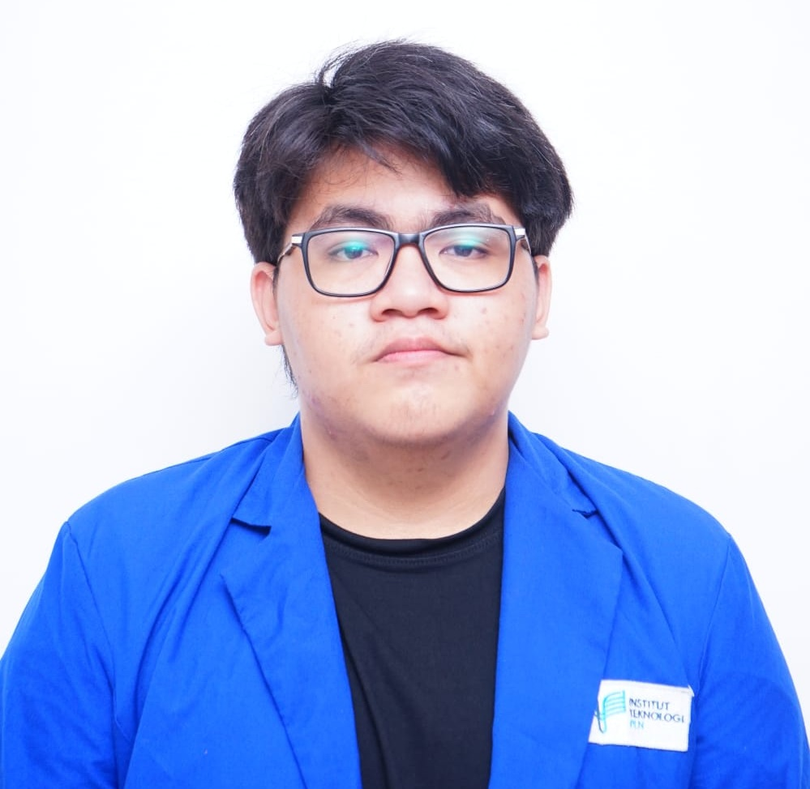

Benaya Joshrael Tualangi
Mahasiswa Sistem Informasi @ ITPLN 🎓
 📄 Download CV{kind=link}
📞 +62 895-8066-12414
✉️ benaya2332044@itpln.ac.id
📍 Jl. Pandu Raya, Rw. Buaya, Cengkareng, Jakarta Barat
Tentang Saya
Saya adalah mahasiswa Sistem Informasi di Institut Teknologi PLN yang tekun, berjiwa kepemimpinan, dan memiliki antusias tinggi pada teknologi dan inovasi digital. Aktif dalam organisasi, terbiasa bekerja dalam tim, dan terus mengembangkan potensi diri.
Keahlian
- Desain Grafis & Branding
- Content & Digital Marketing
- Video Editing
- Project Management
Pendidikan
- 2017 – 2020: SMP Budi Kasih, Makassar
- 2020 – 2023: SMA Katolik Cendrawasih Makassar
Pengalaman
-
Project Leader – EduVibe
- Mengembangkan chatbot pembelajaran untuk siswa.
- Memimpin tim dengan metode agile dan user-centered design.
- Menerapkan feedback pengguna dalam proses iterasi.
-
Event Organizer – Freelance
- Mengorganisir berbagai acara kreatif dan edukatif.
- Mengelola tim, logistik, dan budget secara efisien.
- Memperkuat kemampuan komunikasi dan kepemimpinan.